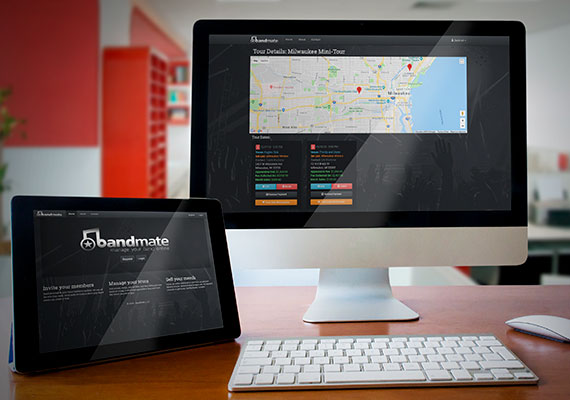
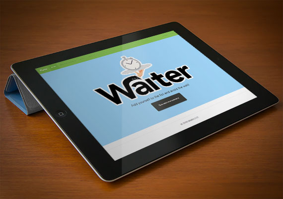
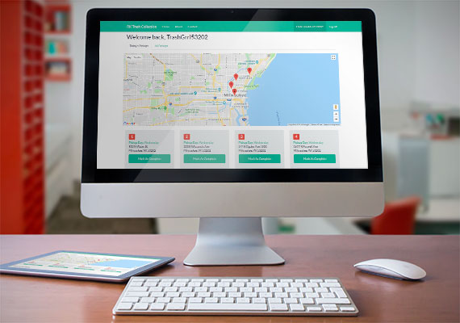
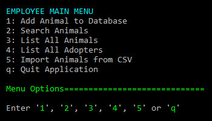
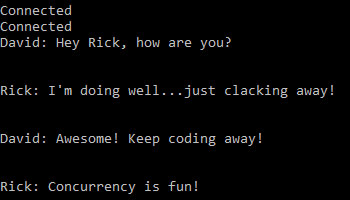
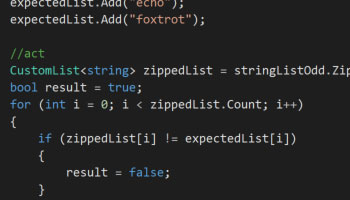
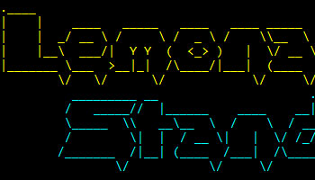
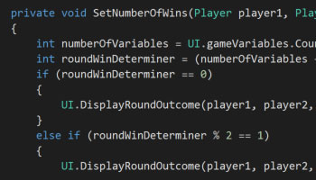

Highly creative and multi-talented Junior Software Developer candidate. Strong knowledge of object-oriented programming and application development. Consistently commended by instructors for programming abilities, grasp of multiple technologies and attention to detail. 15+ years experience in web and U/I design. Outgoing self-starter, team-player and multi-tasker.
I have over 15 years experience writing HTML, CSS and Javascript. By using the latest frameworks and plug-ins I am able to create complex, interactive layouts on the fly.
I have a strong understanding of object-oriented programming and I'm very passionate about using C#, ASP.NET, SQL and more to create database-driven applications.
A minimalist at heart, I obsess over details and strive to create clean and intuitive user interfaces. The F-Pattern is my friend and I have a passion for staying on-trend.
My capstone project, BandMate is an online band manager featuring a stunning U/I and a complex database design. Integrating 5 APIs, this MVP was created in 2 weeks and earned a grade of 100%!
ASP.NET C# HTML/CSS Javascript jQuery


Let's disrupt the way your garbage is picked up! This web app allows customers to set their pickup preferences, view account info and pay online. Trash collectors can view their route, mark their pickups and bill their customers. My first ASP.NET project, I completed this in less than a week and received a grade of 117%!
ASP.NET C# HTML/CSS Javascript jQuery


A C# console application utilizing a local database to manage a virtual humane society.
C# SQL Collaboration

An old-school chat application that runs in the console. Allows 2 users to chat on a local network.
C# Collaboration

Using test-driven development, this project re-creates the built-in C# list class.
C#

A take on the classic business simulation game. Built using C# OOP and runs in the console.
C# SQL

Rock, Paper, Scissors, Lizard, Spock — written in C# using an elegant algorithm.
C#